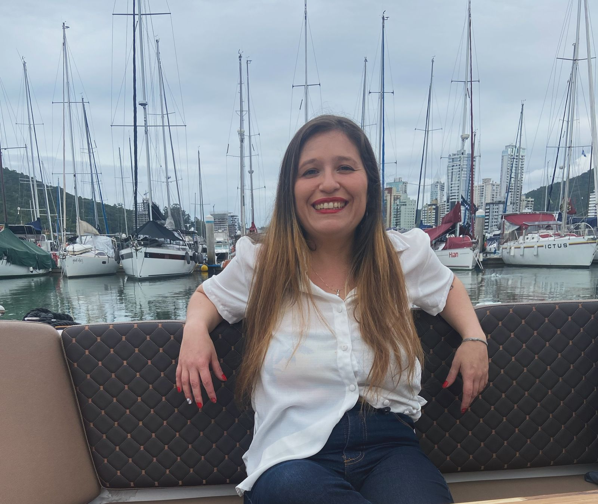

Jornalista, especialista em Inbound Marketing e Escrita Persuasiva, estudante de Análise e Desenvolvimento de Sistemas
Nome: Bruna Geremias
E-mail: brunageremias5@gmail.com
Telefone: (51) 9166-2630
Experiência Profissional
Cargo: Diretora de Imagens
Empresa: Rede Pampa de Comunicações
Descrição: Decidir as imagens que entraríam no Jornal da Pampa.
Experiência Profissional
Cargo: Jornalista
Empresa: Jornal Dimensão
Descrição: Reunião de paulta, entrevistas, produção das reportagens, revisão dos textos
Experiência Profissional
Cargo: Analista de Marketing
Empresa: ADVBOX - Startup
Descrição: Produção de conteúdo e marketing estratégico
Experiência Profissional
Cargo: Analista em Produção de Conteúdo Estratégico
Empresa: Agência Funnil
Descrição: Produção de conteúdo e marketing estratégico
Experiência Profissional
Cargo: Analista em Produção de Conteúdo Estratégico
Empresa: ZOOM Tecnologia
Descrição: Produção de conteúdo e marketing estratégico
Experiência Profissional
Cargo: Analista em Produção de Conteúdo Estratégico
Empresa: Power BI
Descrição: Produção de conteúdo e marketing estratégico
Experiência Profissional
Cargo: Analista de Marketing
Empresa: Rubzy - Startup
Descrição: Produção de conteúdo e marketing estratégico
Experiência Profissional
Cargo: Líder do time de Inbound Marketing
Empresa: Agência Immagine
Descrição: Produção de conteúdo e construção do funil de Inbound Markteing - líderar estratégias do time
Formação Acadêmica
Curso: Jornalismo
Instituição: IPA - Rede de Ensino
Ano de Conclusão: 2010
Formação Acadêmica
Curso: Especialização em Inbound Marketing
Instituição: RD University
Ano de Conclusão: 2018
Formação Acadêmica
Curso: Especialização em Escrita Persuasiva - Copywriter
Instituição: Leanrncafe Ensino Online - Eireli - ME
Ano de Conclusão: 2020
Formação Acadêmica
Curso: Análise e Desenvolvimento de Sistemas
Instituição: Faculdade Municipal de Palhoça
Ano de Conclusão: Previsão: 2026